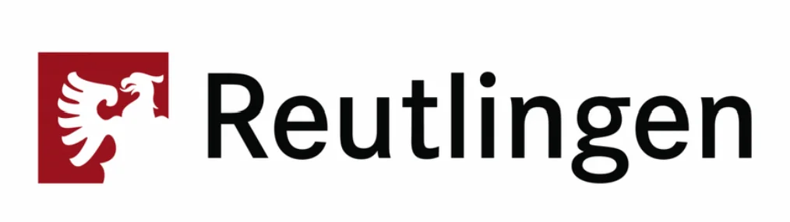

01
Workflow-Automatisierung
KI-gestützte Automatisierung von der Bestellabwicklung bis zur Abfallerfassung – weniger manuelle Aufgaben in jeder Schicht.
3 Std./Tag pro Küche gespartIOMS erkennt, klassifiziert und prognostiziert Lebensmittelabfälle automatisch mit KI-Hardware – und verwandelt Küchendaten in echte Einsparungen, ganz ohne Mehraufwand.


.png)
.png)
Die meisten Küchen verlieren jeden Monat Tausende Euro durch unsichtbaren Abfall – ohne System, das ihn erfasst.
Hardware, Software und KI, die sofort zusammenspielen – jedes Modul greift ins nächste, ganz ohne Mehraufwand.
KI-gestützte Automatisierung von der Bestellabwicklung bis zur Abfallerfassung – weniger manuelle Aufgaben in jeder Schicht.
3 Std./Tag pro Küche gespartEin modernes Kassensystem mit integrierter Zahlungsabwicklung, Tischverwaltung und Echtzeit-Bestellsynchronisation.
99,9% Verfügbarkeit garantiertEchtzeit-Bestandsverfolgung, vorausschauende Nachbestellung und automatische Alerts behalten alles im Griff.
Ø −32% weniger AbfallSmarte Sensoren messen Abfall, Temperatur und Verbrauch mit ±0,1 g Präzision – Live-Daten direkt in die Plattform.
±0,1 g MesspräzisionLive-Reporting, Trendanalysen und umsetzbare Insights geben Managern volle Transparenz über alle Standorte.
Live-Updates in EchtzeitOptimierte Küchenabläufe von A bis Z – keine Silos, keine Doppelerfassung.
Machine Learning prognostiziert Abfallmuster, schlägt Bestellmengen vor und deckt Einsparungspotenziale auf — in Echtzeit.
Volle Küchenkontrolle aus der Hosentasche — Abfälle überwachen, Inventar verfolgen und Bestellungen verwalten.
Sichere, immer verfügbare Infrastruktur mit Echtzeit-Synchronisation über alle Standorte.
Enterprise-Verschlüsselung mit integrierter HACCP- und Lebensmittelsicherheits-Compliance.
Sofortige Benachrichtigungen bei niedrigen Beständen, Abfallspitzen und Einsparungsmöglichkeiten.
Live-Dashboards zeigen genau, wie viel Sie sparen — nach Schicht, Artikel oder Standort.